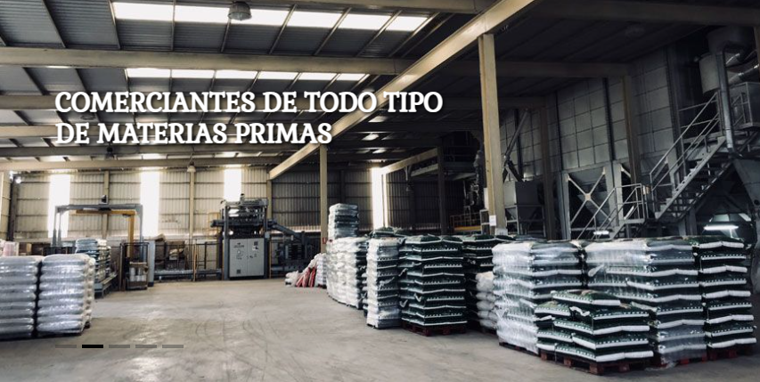

Titulo de seccion
¡Bienvenidos a Agrocava!
Agrocava, la empresa se fundó en la década de los 80
puedes encontrar toda la gama
nuestros productos,especialistas
en comida para caballos y
ganado, contamos con grandes
instalaciones,desde el inicio,crecer
e innovar han sido nuestra base
para ser quien hoy somos y
seremos.
